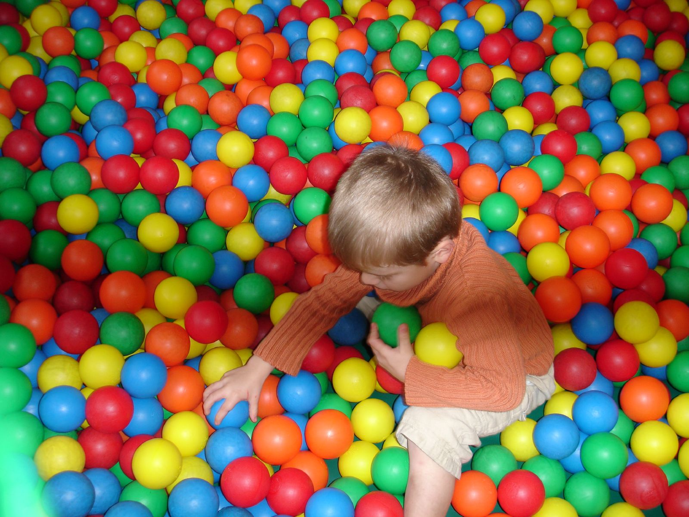

På den mysiga restaurangen hittar du en lekplats som är lika lekfull som dess små gäster. En färgglad värld av äventyr och skratt öppnar sig så fort du kliver in genom dörren. Den här lekplatsen är inte bara en plats för barn att roa sig på medan de väntar på maten – den är en egen liten värld full av upptäckter.
Hem
Välkommen till La Famiglia, den bästa restaurangen i staden!
Kom och njut av vår autentiska mat och mysiga atmosfär.
La Midia öppnade sina dörrar år 1995 och har sedan dess varit en favorit bland invånare och besökare.
Det var år 1995, mitt i en liten stad där människor samlades för att dela måltider, historier och skratt.
Mitt ibland den pulserande staden reste en ambitiös entreprenör sin dröm: en restaurang som skulle bli ett landmärke för både invånare och besökare.
Denne entreprenör, en passionerad kock vid namn Mohammed, hade visionen klart för sig. Han ville skapa en plats där människor kunde känna sig som hemma, där dofterna från köket lockade besökare från gatan och där maten var en hyllning till de bästa smakerna från Italien.
Byggandet av restaurangen var en kamp från början till slut. Abdukader slet hårt, jobbade dygnet runt och investerade allt han hade för att förverkliga sin vision. Han anlitade lokala hantverkare och konstnärer för att hjälpa till med allt från att designa interiören till att skapa en unik meny.
Efter månader av slit stod restaurangen äntligen klar. Den hade en rustik charm med tegelväggar, handgjorda möbler och levande ljus som skapade en mysig atmosfär. Utanför dörren hängde en skylt med namnet "La Midia", vilket betydde "Familjen" på Somaliska.
På invigningsdagen fylldes restaurangen med människor från när och fjärran. De lockades av ryktena om den fantastiska maten och den välkomnande atmosfären. Abdukader stod i köket, redo att imponera på gästerna med sina kulinariska mästerverk.
Men framgången kom inte utan sina utmaningar. Under de första månaderna kämpade La Midia med att etablera sig i den konkurrenskraftiga restaurangbranschen. Men Abdukader gav aldrig upp. Han lyssnade på feedback från sina gäster, finslipade menyn och arbetade ännu hårdare för att ge en exceptionell upplevelse varje gång någon klev över tröskeln.
Med tiden började ryktet om La Midia sprida sig som en löpeld. Invånare i staden blev stamgäster, och turister reste dit bara för att få smaka på Abdukaders berömda rätter. Restaurangen blev inte bara en plats att äta, utan en plats där människor skapade minnen, firade högtider och njöt av varandras sällskap.
Åren gick, men La Midia förblev en stadens juvel. Genom skiftande trender och förändringar i samhället förblev restaurangen en konstant, ett ställe där generationer samlades för att dela kärlek till mat och gemenskap. Och i hjärtat av det hela stod Abdukader, en man vars passion och beslutsamhet hade skapat något som skulle överleva tidens tand och fortsätta lysa i många år framöver.
Leken börjar med en klätterställning som sträcker sig mot taket, där små äventyrare kan testa sin styrka och balans. För de mindre gästerna finns det mjuka gungor och små lekhörnor med färgglada leksaker som väntar på att bli utforskade. En liten rutschbana lockar till skratt och glädje med varje nerfärd.
Mellan lekstunderna kan föräldrarna slappna av vid borden och njuta av sin måltid medan de håller ett vakande öga på sina barn. Det finns gott om sittplatser runt omkring lekplatsen så att alla kan vara nära varandra.
Det är en plats där barnen kan vara barn och där deras fantasi kan få fritt spelrum. Och det bästa av allt är att den här lekplatsen skapar inte bara minnen för barnen, utan för hela familjen.

Kontakt
Kom och besök oss på: